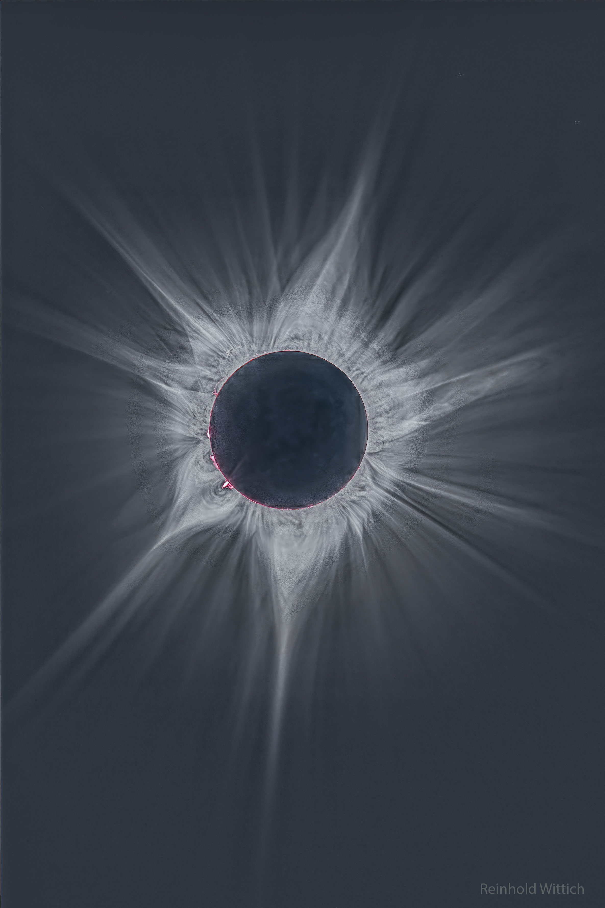
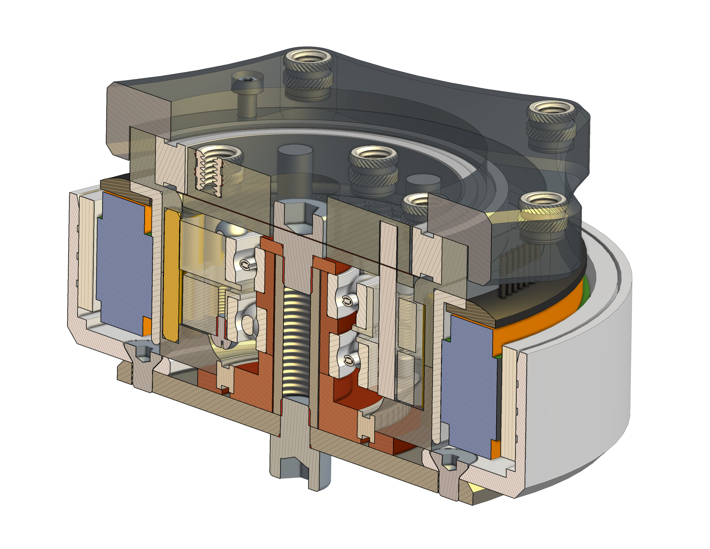

This project started as a challenge after I told a mentor I was interested in designing a cycloidal drive. The goal was to design a cycloidal gearbox sized to fit inside the hole in an RO-80 outrunner motor. A cycloidal drive uses an eccentric input to drive a lobed disc against a ring of pins, which gives a large reduction in a compact, coaxial package. That makes it a good fit for a tight space like this, but I had never designed one before.
My first iteration completely ignored the requirement that it fit in the motor's hole, so it strayed from the challenge entirely. I didn't notice at first, and I kept refining a design that couldn't do the job. Along the way I 3D printed prototypes to test the geometry and shared my progress on Discord, where several career engineers gave me feedback that shaped the design.
When I finally realized I had not been following the requirements, I pivoted. The change turned out to be surprisingly easy, because I had built the gearbox parametrically, so resizing it to the motor's hole was mostly a matter of updating a few dimensions. That was a good lesson in how much planning for change up front pays off.
The project also had an impact beyond my own design. One of my mentors changed his gearbox to use 1/8" diameter pins, as I had, to make it more compact. Overall it was an incredible learning experience, and I'm grateful to everyone who helped me along the way.

Credit & Copyright: Reinhold Wittich